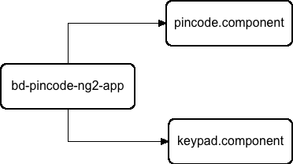
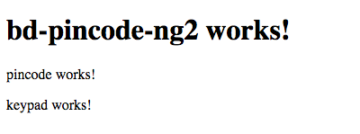

If you are a front end developer and have worked with angular 1.x, you probably remember the ridiculous amount of scaffolding and build tools yo need to get your development environment set up the way you want. Next to that, best practices were opinionated and changed frequently. I often found myself entering an angular project not knowing what to expect. Everybody had their preferred build tools, folder structure, ways to structure module code, do routing etc.
This is one of the reasons why I’m actually looking forward to wide industry adoption of Angular 2. It appears to be a framework that implements a lot of the best practices that were put forward over the last couple of years while leaving less room to be flexible about them. Angular 2 has it’s own style guide and provides a lot of consistency amongst its different components and building blocks. I think overall, it looks like an easy framework to get started with, that is at the same time highly performant and geared towards enterprise grade applications.
Initiating an Angular 2 application
I’m going to start by installing Angular cli, which is a command line tool that makes it a lot easier to set up an angular 2 application. You could see it as an angular specific Yeoman. It is still under development, but it already works pretty good for what we will need.
npm install -g angular-cliOnce that is done, we can use it to create a new Angular 2 project:
ng new bd-pincode-ng2This will create a new directory bd-pincode-ng2 and run ng init in it, which will create your app files and folders and set up your standard build and development configuration.
We can now run our application using
ng serveThat’s it! Easy right?
Creating the two bd-pincode components
I will take the example of my previously created angular 1.x directives and create two components. One for the pincode and one for the keypad.
In Angular 2, the entire app consists out of components that are hierarchically ordered in a component tree.
Since we just created our app using the command line tool, it has already created our root component: bd-pincode-ng2-app.
The root component basically contains our entire app and all subcomponents.
We will now create the keypad and pincode components using the cli.

ng generate component keypad
ng generate component pincodeThe command line tool will automatically create all the necessary files. Seperate folders per component are created in the app directory of the application.
Coupling the components with the root component
Components are very similar to angular 1.x directives.
We will add our components to the root component’s HTML src/app/bd-pincode-ng2.component.html:
<app-pincode></app-pincode>
<app-keypad></app-keypad>Next, we will need to tell the root component to import these components and we have to link them by adding them to the directives array in the @component decorator:
import { Component } from '@angular/core';
import { PincodeComponent } from './pincode/pincode.component';
import { KeypadComponent } from './keypad/keypad.component';
@Component({
moduleId: module.id,
selector: 'bd-pincode-ng2-app',
templateUrl: 'bd-pincode-ng2.component.html',
styleUrls: ['bd-pincode-ng2.component.css'],
directives: [ PincodeComponent , KeypadComponent ]
})
export class BdPincodeNg2AppComponent {
title = 'bd-pincode-ng2 works!';
}After running ng serve You should now see the following in the browser:

Creating the keypad component
Angular 2 property bindings
Now that both components are coupled with the root component, we can start porting the code from the Angular 1.x keypad directive.
Currently, we see that the cli has set up the component with templateUrls. In the keypad.component.ts file, let’s change templateUrl in the @component decorator to template so we can just copy paste our template snippet in.
Because Angular 2 uses different property bindings than Angular 1.x, we need to make some changes to the html we just pasted in. You can find an extended overview of the differences here.
ng-repeat="row in numpad"becomes*ngFor="let row of numpad"ng-repeat="number in row"becomes*ngFor="let number of row"ng-click="clickNumber(number)"becomes(click)="clickNumber(number)"
import { Component, OnInit } from '@angular/core';
@Component({
moduleId: module.id,
selector: 'app-keypad',
template: '<table>' +
'<tr *ngFor="let row of numpad">' +
'<td *ngFor="let number of row">' +
'<button type="button" (click)="clickNumber(number)"></button>' +
'</td>' +
'</tr>' +
'</table>',
styleUrls: ['keypad.component.css']
})
export class KeypadComponent implements OnInit {
constructor() { }
ngOnInit() {
}
}We can also remove the automatically created keypad.component.html file as we are not using it anymore.
Typescript variables and functions
Next, we can start porting the code of the Angular 1.x directive’s link function. Let’s start with the keypad array that draws the keypad.
...
export class KeypadComponent implements OnInit {
numpad: any[];
constructor() {
this.numpad = [
[1, 2, 3],
[4, 5, 6],
[7, 8, 9],
['C', 0, '<']
];
...As Angular 2 uses typescript, best practice requires us to strongly type all our variables. We could create an interface for the numpad variable, but in this case, since it will only be used once, I’m going to just define it as an any[] array.
We will also copy the helper functions of the Angular 1.x directive in our component class:
...
clickNumber(number) {
scope.ngModel = transformPin(scope.ngModel, number);
}
transformPin(pin, number) {
switch (number) {
case 'C':
return '';
case '<':
return pin.substring(0, pin.length - 1);
default:
return (pin + number);
}
}
...The clickNumber function is coupled with the DOM using the eventbinding (click)=.... it triggers a helper function transformPin that changes the pincode according to the button that was clicked.
Our build will now fail because of the scope attribute ngModel. Angular 2 components work with inputs and outputs instead.
Inputs and Outputs
You could see Angular 2 Input and Outputs like the api of a component. There’s a couple of ways to define them, but I like to add them to the @Component decorator. Since the keypad component will recieve a pincode to work with, change it and output a new pincode, we need to define it both as an input and an output.
@Component({
...
inputs:['pincode'],
outputs:['pincode']
})